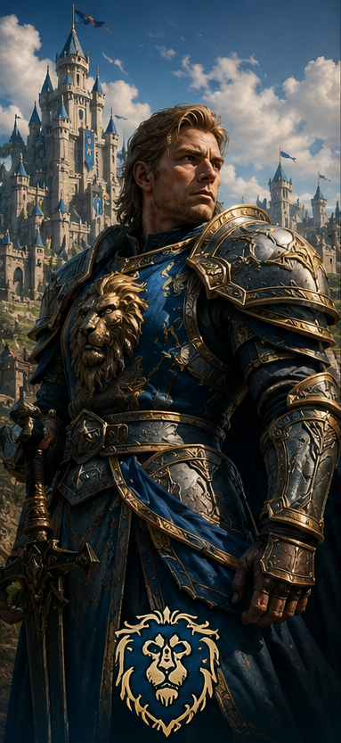
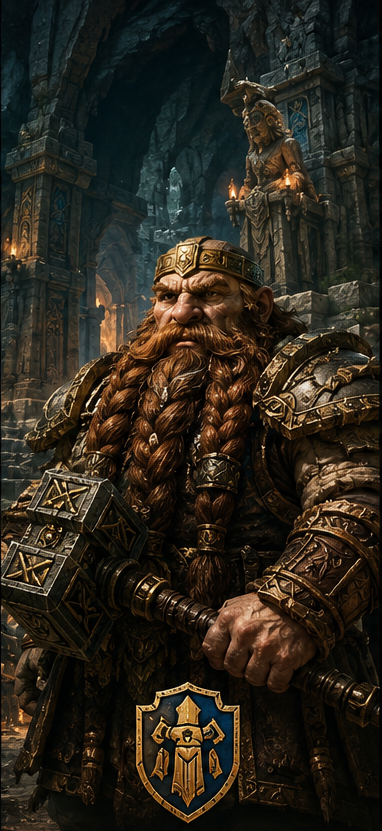
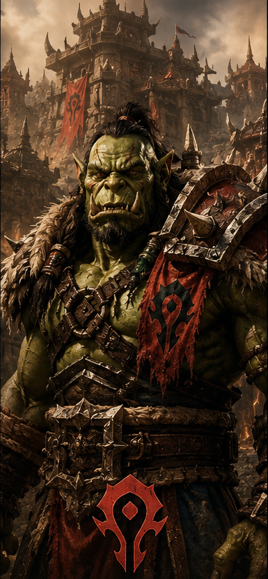
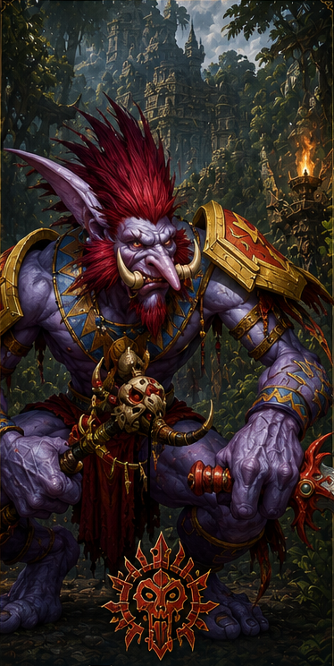

Les Races de Gardenia
Le monde de Gardenia est partagé entre quatre peuples majeurs. Chacun possède sa propre histoire, sa culture et sa vision du monde.

Humains
Les humains sont les bâtisseurs des royaumes de l'Alliance. Polyvalents et ambitieux, ils excellent dans tous les domaines.
- Faction : Alliance
- Capitale : Aurélia
- Valeurs : Honneur, Justice

Nains
Peuple des montagnes et des forteresses. Les nains sont célèbres pour leur artisanat et leur robustesse.
- Faction : Alliance
- Capitale : Kar-Dun
- Valeurs : Tradition, Travail

Orcs
Guerriers fiers vivant selon les lois des clans. L'honneur est au cœur de leur existence.
- Faction : Horde
- Capitale : Gor'Nar
- Valeurs : Force, Honneur

Trolls
Peuple ancestral lié aux esprits et aux forces sauvages. Ils perpétuent les traditions de leurs ancêtres.
- Faction : Horde
- Capitale : Zul'Raka
- Valeurs : Spiritualité, Liberté